Skala
SCALE · Likert-Skala (Auswahl eines Werts aus 1~N)
Was ist ein Skalenfeld?
- 1.1Feld hinzufügen und Aufbau des Eigenschaftsbereichs
1.1Feld hinzufügen und Aufbau des Eigenschaftsbereichs
Überblick
Skala (SCALE) ist eine Likert-Skaleneingabe, bei der eine von festgelegten Zahlen ausgewählt wird. Verwenden Sie sie für Elemente, die mit einer Stufe beantwortet werden, z. B. Schmerzintensität · Zufriedenheit · Schweregrad. Es werden zwar Zahlen angezeigt, es handelt sich aber nicht um ein freies Eingabefeld, sondern um Schaltflächen; gespeichert wird eine einzige ganze Zahl, die der Benutzer ausgewählt hat. Wird nichts ausgewählt, bleibt der Wert leer. Wenn Zahlenwerte direkt eingegeben werden müssen, verwenden Sie den Typ Zahl; wenn Optionen aus Text benötigt werden, verwenden Sie einen Typ der Einzelauswahl-Familie.
Bildschirmbeschreibung
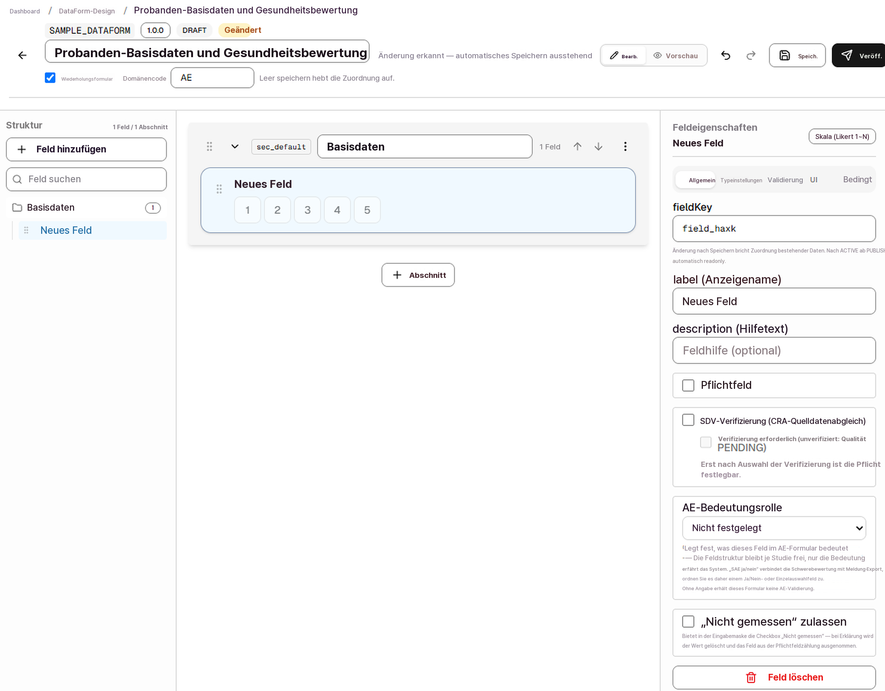
[+ Feld hinzufügen] — Wenn Sie hier den Typ festlegen, wird das Feld erstellt.
Im Strukturbaum wird das neue Feld hinzugefügt.
Auf dem WYSIWYG-Canvas werden die Auswahlschaltflächen in einer Zeile angezeigt. Anfangs sind es fünf Schaltflächen 1~5; Anzahl und Bereich ändern Sie in den Typeinstellungen. 3.2
fieldKey — der tatsächliche Schlüssel, unter dem der Wert gespeichert wird. 2.1
label (Anzeigename) · description (Hilfetext) — der auf dem Bildschirm angezeigte Name und die ergänzende Beschreibung. 2.1
Pflichtfeld · SDV-Verifizierung · AE-Bedeutungsrolle · „Nicht gemessen“ zulassen — werden in Kapitel 2 einzeln erläutert.
Typ-Badge „Skala (Likert 1~N)“ — der Typ des ausgewählten Felds. Nach dem Hinzufügen kann er nicht mehr geändert werden.
5 Eigenschafts-Tabs — Allgemein · Typeinstellungen · Validierung · UI · Bedingt. Dieses Handbuch behandelt davon den Tab „Validierung“ nicht — da aus Optionen ausgewählt wird, ist eine Wertvalidierung nicht anwendbar. (6.1 „Nicht in diesem Dokument behandelt“)
Zu beachten
Unbedingt prüfen Datenschäden · Formular nicht abschließbar
- • Der Typ kann nach dem Hinzufügen nicht geändert werden. Wenn Sie den falschen Typ gewählt haben, löschen Sie das Feld und fügen Sie es erneut hinzu. (Nur bei Unterelementen von Tabellen und Feldgruppen ist eine Typänderung ausnahmsweise möglich.)
- • Gespeichert wird eine Zahl. Labels an beiden Enden wie „Kaum schmerzhaft“ werden nur auf dem Bildschirm angezeigt; in die Daten gelangt nur die ausgewählte ganze Zahl (z. B.
3). Halten Sie die Skalendefinition zusätzlich im Prüfplan fest, damit Personen, die die exportierten Daten lesen, die Bedeutung der Zahl kennen. - • Nach der Veröffentlichung (PUBLISH) kann die Struktur nicht mehr geändert werden. Sind im laufenden Betrieb Änderungen nötig, veröffentlichen Sie eine neue Version.
Leicht missverständliches Verhalten
- • Wenn Sie Einstellungen ändern, erscheint oben „Änderung erkannt — automatisches Speichern ausstehend“. Kurz darauf wird automatisch gespeichert; Sie können auch [Speichern] wählen, um sofort zu speichern. Rückgängig machen mit
Ctrl+Z.
Tab „Allgemein“ — Name · Pflicht · Verifizierung · Nicht gemessen
- 2.1fieldKey · Anzeigename · Hilfetext
- 2.2Pflichtfeld
- 2.3SDV-Verifizierung (CRA-Quelldatenabgleich)
- 2.4„Nicht gemessen“ zulassen
2.1fieldKey · Anzeigename · Hilfetext
Überblick
Bereich zur Festlegung des Namens eines Felds. Speicherschlüssel (fieldKey) und angezeigter Name (label) sind unterschiedliche Werte, und bis wann sie geändert werden dürfen, ist verschieden.
Bildschirmbeschreibung
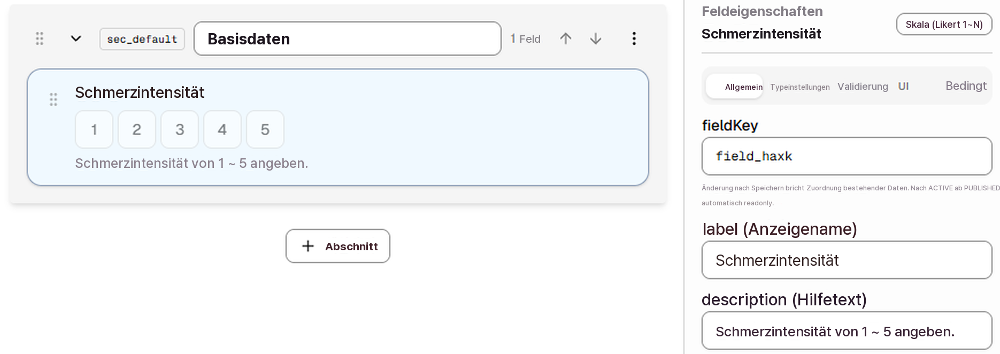
label (Anzeigename) — Geben Sie den Namen des Elements ein, der in der Eingabemaske angezeigt wird.
Erscheint als Feldtitel auf dem Canvas.
description (Hilfetext) — Geben Sie die ergänzende Beschreibung ein, die unter dem Anzeigenamen erscheint. Bleibt sie leer, wird nichts angezeigt.
Erscheint als graue Schrift unter den Auswahlschaltflächen.
fieldKey — der tatsächliche Schlüssel, unter dem der Wert gespeichert wird. Beim Hinzufügen eines Felds wird er automatisch vergeben, z. B. field_haxk, und kann mit Buchstaben · Ziffern · Unterstrichen geändert werden. Er wird auf dem Bildschirm nicht angezeigt — prüfen Sie unbedingt den Abschnitt „Zu beachten“ unten.
Zu beachten
Unbedingt prüfen Datenschäden · Formular nicht abschließbar
- • ⛔ Ändern Sie den fieldKey nach dem Speichern nicht. Wie der Bildschirmhinweis sagt: „Änderung nach Speichern bricht Zuordnung bestehender Daten“ — bereits eingegebene Werte werden nicht mit dem neuen Schlüssel verknüpft und gehen praktisch verloren.
- • Bei Skalen ist der Hilfetext besonders wichtig. Da bei diesem Typ nur Zahlen angezeigt werden, können verschiedene Erfasser die Richtung umgekehrt verstehen, wenn nicht schriftlich angegeben ist, welche Seite die stärkere ist. Verwenden Sie Hilfetext 2.1 und helpText 4.4 gemeinsam.
- • Wechselt das Formular nach ACTIVE in den Status PUBLISHED, wird das Eingabefeld fieldKey automatisch schreibgeschützt. Erst ab diesem Zeitpunkt verhindert das System Änderungen; bis dahin müssen Sie selbst darauf achten.
Leicht missverständliches Verhalten
- • Den Anzeigenamen können Sie jederzeit gefahrlos ändern, denn er ist kein Speicherschlüssel, sondern ein Bildschirmtext.
2.2Pflichtfeld
Überblick
Legt fest, ob für dieses Element zwingend eine Auswahl getroffen werden muss. Wenn aktiviert, wird das Speichern in der Eingabemaske blockiert, solange keine Schaltfläche ausgewählt ist.
Bildschirmbeschreibung
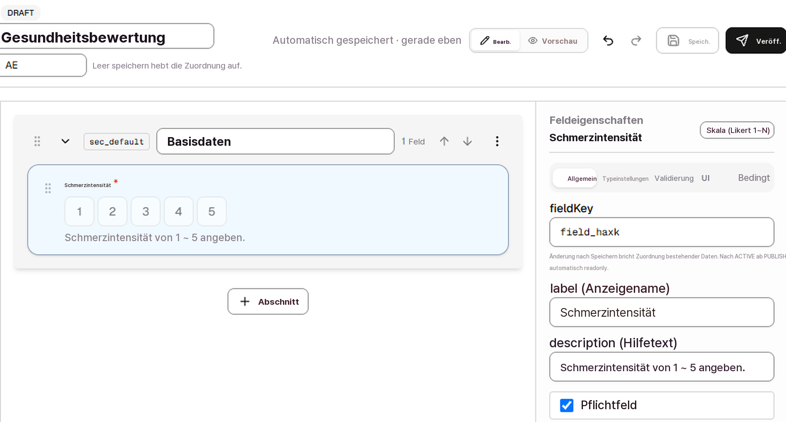
Pflichtfeld — Wenn aktiviert, wird dieses Feld zum Pflichtfeld.
Rechts neben dem Anzeigenamen auf dem Canvas erscheint ein roter Stern (*), der Benutzer auf die Pflicht hinweist.
Zu beachten
Unbedingt prüfen Datenschäden · Formular nicht abschließbar
- • Eine Skala hat keine Option „Nicht zutreffend“. Die Schaltflächen sind nur die Zahlen von min bis max; Probanden ohne Symptome haben daher nichts auszuwählen. Kann dieser Fall bei einem Element auftreten, ① setzen Sie min auf 0, um „0 = Keine“ in die Optionen aufzunehmen, ② fragen Sie das Element per bedingter Anzeige nur bei den betroffenen Personen ab Kap. 5 oder ③ lassen Sie „Nicht gemessen“ zu 2.4. Wenn Sie das Element als Pflichtfeld festlegen, ohne eine dieser drei Möglichkeiten zu wählen, kann das Formular nicht abgeschlossen werden.
- • Felder, die durch bedingte Anzeige ausgeblendet sind, sind von der Pflichtprüfung befreit. Kap. 5 Das Ausblenden im Tab „UI“ nimmt sie dagegen nicht aus; verwechseln Sie das nicht. 4.3
Leicht missverständliches Verhalten
- • Ist „Nicht gemessen“ zulassen aktiviert und gibt der Benutzer die Erklärung ab, wird dieses Feld aus der Pflichtfeldzählung ausgenommen. 2.4
Hinweis
- • Die Pflichtangabe wird für die Bewertung des Formularabschlusses verwendet. Wird keine Schaltfläche ausgewählt, gilt der Wert als leer.
2.3SDV-Verifizierung (CRA-Quelldatenabgleich)
Überblick
SDV (Source Data Verification) ist das Verfahren, bei dem der Monitor (CRA) die eingegebenen Werte mit den Quelldaten der Prüfstelle abgleicht. Hier legen Sie fest, ob dieses Feld Gegenstand dieses Abgleichs ist. Diese Einstellung ist bei allen Feldtypen gleich, daher ist auch der Bildschirm unabhängig vom Typ identisch.
Bildschirmbeschreibung


SDV-Verifizierung (CRA-Quelldatenabgleich) — Wenn aktiviert, wird dieses Feld in die Abgleichliste des CRA aufgenommen.
Mit der Aktivierung wird das Unterelement aktiv.
Verifizierung erforderlich (unverifiziert: Qualität PENDING) — kann erst festgelegt werden, nachdem ① aktiviert wurde. Wenn aktiviert, bleibt der Qualitätsstatus der betreffenden Daten auf PENDING, bis der CRA den Abgleich abgeschlossen hat.
Bevor ① aktiviert ist, ist ② ausgegraut und inaktiv. Wie der Bildschirmhinweis sagt: „Erst nach Auswahl der Verifizierung ist die Pflicht festlegbar.“
Zu beachten
Unbedingt prüfen Datenschäden · Formular nicht abschließbar
- • Bei einer Wertänderung wird die Verifizierung aufgehoben. Wird die Auswahl eines bereits VERIFIED-Felds geändert, fällt der Qualitätsstatus auf PENDING zurück, und der CRA muss erneut abgleichen.
Leicht missverständliches Verhalten
- • SDV kann nicht von der Person durchgeführt werden, die die Daten eingegeben hat. Das System erzwingt eine Kreuzprüfung (Cross-User SoD); eingebende und verifizierende Person müssen daher zwingend verschieden sein.
- • Bei Skalen, die Probanden selbst beantworten (patientenberichtete Ergebnisse), gibt es möglicherweise keine Quelldaten zum Abgleichen. Realistisch ist eine Festlegung für SDV nur, wenn das Original des Fragebogens aufbewahrt wird.
Hinweis
- • Der Qualitätsstatus durchläuft PENDING → VERIFIED → CLEAN. Ist auch nur ein Feld mit Verifizierungspflicht unverifiziert, können die betreffenden Daten nicht CLEAN werden.
2.4„Nicht gemessen“ zulassen
Überblick
Mit dieser Funktion wird der Fall, dass eine Bewertung nicht durchgeführt werden konnte, als eigener Wert erfasst. Wird keine Schaltfläche ausgewählt, lässt sich „noch nicht beantwortet“ nicht von „konnte nicht bewertet werden“ unterscheiden. Diese Erklärung unterscheidet beides.
Bildschirmbeschreibung
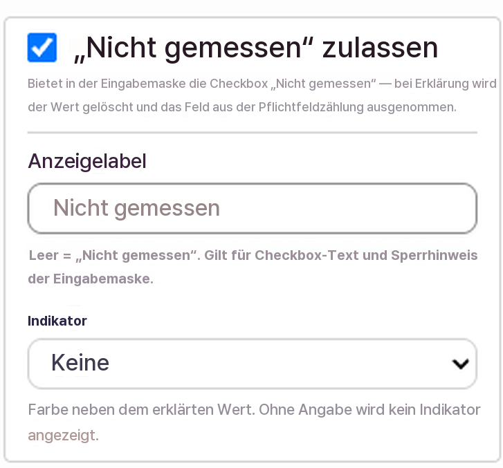
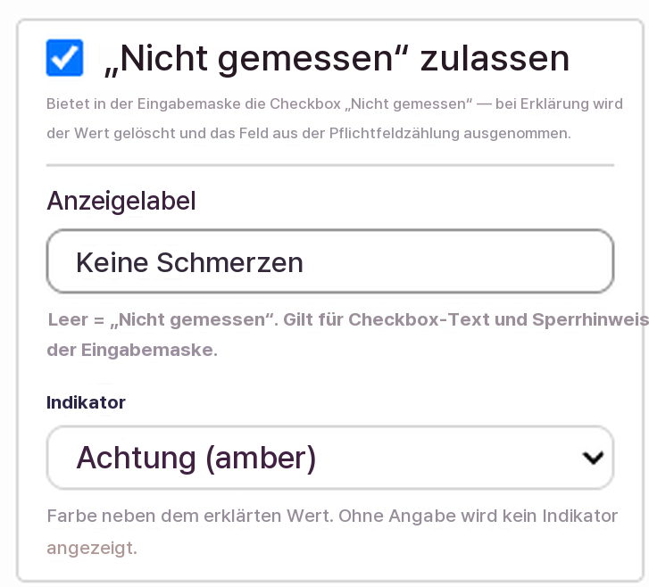
„Nicht gemessen“ zulassen — Wenn aktiviert, erscheint in der Eingabemaske die Checkbox „Nicht gemessen“, und die beiden folgenden Elemente werden angezeigt.
Anzeigelabel — Bleibt es leer, gilt der Standardwert „Nicht gemessen“.
Wenn Sie den Text ändern, wird er sowohl für die Checkbox der Eingabemaske als auch für den Sperrhinweis verwendet.
Indikator — Standardwert ist Keine.
Wenn Sie ihn auf Achtung (amber) ändern, erscheint neben dem erklärten Wert eine Markierung in dieser Farbe.
Zu beachten
Unbedingt prüfen Datenschäden · Formular nicht abschließbar
- • ⛔ Erfassen Sie „keine Symptome“ nicht als „Nicht gemessen“. Das Anzeigelabel
Keine Schmerzenin der Aufnahme zeigt genau diese Falle — keine Schmerzen zu haben ist ein Bewertungsergebnis und kein Zustand, in dem nicht bewertet werden konnte. Bei der Erklärung „Nicht gemessen“ wird der Wert gelöscht und das Feld auch aus der Pflichtfeldzählung ausgenommen; die klinische Information „Keine Schmerzen“ geht damit verloren. Wenn Sie „keine Symptome“ erfassen müssen, setzen Sie min auf 0 und nehmen Sie diesen Wert in die Optionen auf. 3.2 - • Bei der Erklärung wird der Wert gelöscht. Wie der Bildschirmhinweis sagt — „bei Erklärung wird der Wert gelöscht und das Feld aus der Pflichtfeldzählung ausgenommen.“
Leicht missverständliches Verhalten
- • „Nicht gemessen“ verwenden Sie für „Fälle, in denen die Bewertung selbst nicht möglich war“, z. B. wenn wegen Bewusstseinsminderung nicht nach Schmerzen gefragt werden konnte oder der Besuch selbst nicht stattgefunden hat. Formulieren Sie auch das Anzeigelabel so, dass diese Bedeutung erkennbar ist (z. B.
Nicht beurteilbar).
Hinweis
- • Ohne festgelegten Indikator wird die Farbmarkierung nicht angewendet. Wenn eine Hervorhebung nötig ist, wählen Sie z. B. Achtung (amber).
Tab „Typeinstellungen“ — Aufbau der Optionen
- 3.1Gesamtaufbau des Tabs „Typeinstellungen“
- 3.2Optionen erstellen (min · max · step · Labels an beiden Enden)
- 3.3Standardwert (defaultValue)
3.1Gesamtaufbau
Überblick
In diesem Tab erstellen Sie die Optionen. Anders als bei anderen Typen gibt es keine Länge · keinen regulären Ausdruck · keine Einheit; Sie legen nur fest, von wo bis wo und in welchem Abstand Schaltflächen erstellt werden, und welche Beschreibungen an beiden Enden stehen. Bei diesem Typ werden tatsächlich drei Elemente verwendet.
Bildschirmbeschreibung
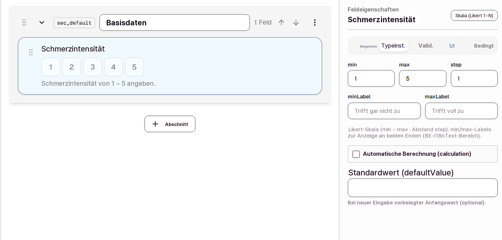
min · max · step — Anfang · Ende · Abstand der Optionen. Von Anfang an sind 1 · 5 · 1 eingetragen; unverändert ergeben sich fünf Stufen 1~5. 3.2
minLabel · maxLabel — Beschreibungstexte, die nur an den Schaltflächen an beiden Enden stehen. 3.2
Bildschirmhinweis — „Likert-Skala (min ~ max · Abstand step). min/max-Labels zur Anzeige an beiden Enden“
Automatische Berechnung (calculation) — das Element wird angezeigt, bei Skalen aber nicht verwendet. Diese Funktion berechnet Zahlenwerte aus anderen Feldwerten; verwenden Sie sie daher beim Typ Zahl.
Standardwert (defaultValue) — der Wert, der bei einer neuen Eingabe vorausgewählt wird. 3.3
Zu beachten
Leicht missverständliches Verhalten
- • min · max · step dürfen nicht leer sein. Diese drei Werte bilden die Optionen; werden sie gelöscht, können keine Schaltflächen erstellt werden. Darin unterscheidet sich dieser Typ von anderen Typen, bei denen die Elemente der Typeinstellungen meist „optional“ sind.
- • Die hellgrauen Texte
Trifft gar nicht zu·Trifft voll zusind Eingabebeispiele und keine eingestellten Werte. Bleiben die Felder leer, wird an beiden Enden kein Text angezeigt. - • In diesem Tab gibt es keine Einstellung, die Eingaben außerhalb des Wertebereichs verhindert. Sie ist nicht nötig — Benutzer können nur aus den erstellten Schaltflächen auswählen, sodass Werte außerhalb des Bereichs gar nicht erst entstehen.
Hinweis
- • Der Aufbau dieses Tabs ist durch den beim Erstellen des Felds gewählten Typ festgelegt. Bei einem anderen Typ ändern sich auch die Elemente dieses Tabs.
3.2Optionen erstellen (min · max · step · Labels an beiden Enden)
Überblick
Legt fest, wie viele Optionen mit welchen Zahlen erstellt werden und was die beiden Enden bedeuten. Die Schaltflächen werden von min bis max im Abstand step automatisch erstellt — in der Aufnahme von 1 bis 7 in Schritten von 1, also 7 Schaltflächen.
Bildschirmbeschreibung
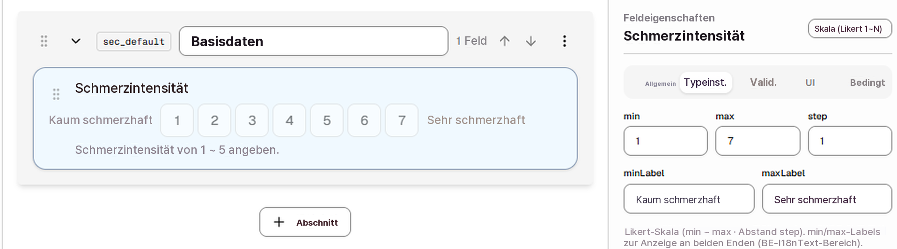
min — die Anfangszahl der Optionen. Standardwert ist 1.
max — die Endzahl der Optionen. In der Aufnahme wurde sie auf 7 geändert, sodass eine 7-stufige Skala entsteht.
step — der Abstand zwischen den Zahlen. Er muss mindestens 1 betragen; üblicherweise wird 1 unverändert verwendet.
Ergebnis von ①~③ — auf dem Canvas werden die Schaltflächen 1 2 3 4 5 6 7 erstellt. Die Anzahl ergibt sich aus (max − min) ÷ step + 1.
minLabel · maxLabel — Beschreibungen für die Schaltflächen an beiden Enden. In der Aufnahme: Kaum schmerzhaft · Sehr schmerzhaft.
Sie erscheinen jeweils am linken und rechten Ende der Schaltflächenzeile. Die Zahlen dazwischen erhalten keine Beschreibung.
Zu beachten
Unbedingt prüfen Datenschäden · Formular nicht abschließbar
- • ⛔ Ändern Sie den Skalenbereich nach der Veröffentlichung nicht. Bei Daten, die mit 1~5 erhoben wurden, und Daten, die mit 1~7 erhoben wurden, bedeutet dieselbe
3etwas anderes. Wenn Sie den Bereich ändern, lassen sich frühere und spätere Daten nicht mehr als eine Skala auswerten. Legen Sie den Bereich erst fest, nachdem er im Prüfplan festgeschrieben wurde. - • ⛔ Wenn „keine Symptome“ abgebildet werden muss, setzen Sie min auf 0. Ist min 1, ist die niedrigste Option „leicht vorhanden“, und Probanden ohne Symptome haben keine passende Stufe. 2.2 · 2.4
- • Auch wenn step größer als der Bereich ist, verhindert das System dies nicht. Bei z. B. min 1 · max 5 · step 10 entsteht nur eine Schaltfläche, und die Skala verliert ihre Bedeutung. Prüfen Sie vor dem Speichern unbedingt die Anzahl der Schaltflächen auf dem Canvas.
Leicht missverständliches Verhalten
- • Ist min größer als max, wird das Speichern abgelehnt. Prüfen Sie beide Werte zusammen.
- • Die Bedeutung der Zahlen dazwischen wird nicht erläutert. Da nur die Labels an beiden Enden angezeigt werden, schreiben Sie eine Definition je Stufe bei Bedarf in helpText. 4.4
Hinweis
- • Je mehr Stufen, desto feiner die Antworten, desto größer aber auch die Abweichungen zwischen Erfassern. Sehen Sie nur so viele Stufen vor, wie klinisch unterschieden werden müssen.
Häufig verwendete Konfigurationen
| Einstellung | Erstellte Optionen | Verwendung |
|---|---|---|
| min 1 · max 5 · step 1 | 1 2 3 4 5 | 5-stufige Likert-Skala (Standard) |
| min 1 · max 7 · step 1 | 1 2 3 4 5 6 7 | 7-stufige Likert-Skala (Aufnahme) |
| min 0 · max 10 · step 1 | 0 1 2 … 10 | NRS-Schmerzskala (0 = Keine) |
| min 0 · max 4 · step 1 | 0 1 2 3 4 | Schweregrad (0 = Keine) |
3.3Standardwert (defaultValue)
Überblick
Der Wert, der beim Start einer neuen Eingabe vorausgewählt wird. Geben Sie eine Zahl aus den Optionen ein.
Bildschirmbeschreibung
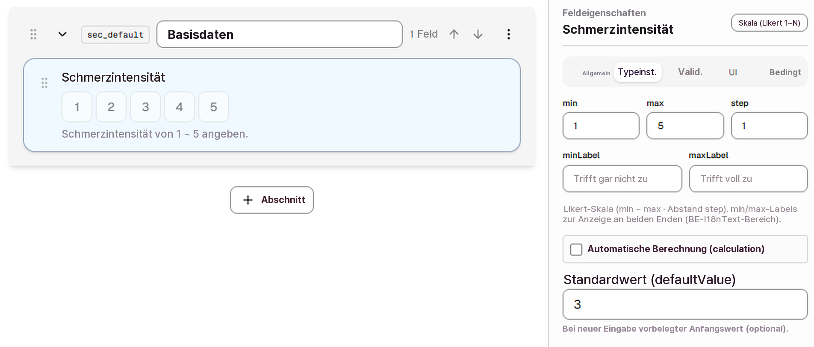
3 — auf den Schaltflächen des Canvas erscheint keine AuswahlmarkierungStandardwert (defaultValue) — Geben Sie die Zahl ein, die bei einer neuen Eingabe vorausgewählt wird. (optional)
Zu beachten
Unbedingt prüfen Datenschäden · Formular nicht abschließbar
- • ⛔ Bei Skalen gilt der Grundsatz, keinen Standardwert festzulegen. Skalen fragen nach der subjektiven Einschätzung von Proband oder Bewerter; ist ein mittlerer Wert vorausgewählt, entsteht eine Antwortverzerrung zu diesem Wert hin. Außerdem lässt sich nicht mehr unterscheiden, ob tatsächlich bewertet wurde.
- • Legen Sie keine Zahl außerhalb der Optionen als Standardwert fest. Tragen Sie z. B. bei einer Skala 1~5
7ein, wird ein nicht auswählbarer Wert zum Anfangswert.
Leicht missverständliches Verhalten
- • In der Canvas-Vorschau wird der Standardwert nicht angezeigt. Auch wenn Sie wie in der Aufnahme
3festlegen, erscheint Schaltfläche 3 nicht als ausgewählt — nicht weil die Einstellung nicht übernommen wurde, sondern weil die Vorschau den Auswahlzustand nicht darstellt. Prüfen Sie die tatsächliche Anwendung in der Eingabemaske. (Darin unterscheidet sich dieser Typ von anderen Typen, bei denen der Wert eingetragen erscheint.) - • Der Standardwert gilt nur für neu erstellte Eingaben. Bereits gespeicherte Daten werden nicht geändert.
Tab „UI“ — Bildschirmanordnung und Hinweistexte
- 4.1Gesamtaufbau des Tabs „UI“
- 4.2Layoutbreite
- 4.3Schreibgeschützt · Ausblenden
- 4.4helpText (Hilfetext)
4.1Gesamtaufbau
Überblick
In diesem Tab legen Sie nicht den Wert selbst fest, sondern wie das Feld auf dem Bildschirm angeordnet und erläutert wird. Die Einstellungen dieses Tabs ändern die gespeicherten Daten selbst nicht. Ausblenden verbirgt das Feld jedoch nur auf dem Bildschirm und nimmt es nicht aus der Pflichtfeldzählung aus; prüfen Sie daher vor der Verwendung 4.3.
Bildschirmbeschreibung
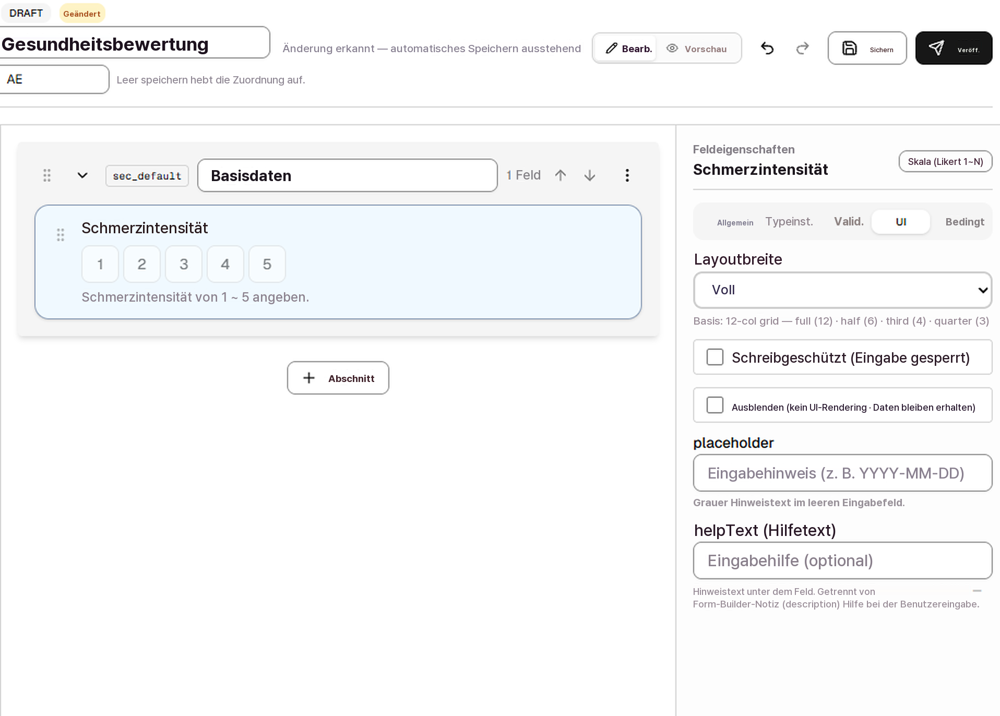
Layoutbreite — die Breite, die dieses Feld in einer Zeile einnimmt. Die Bedeutung der Optionen steht im Hinweis direkt darunter: „Basis: 12-col grid — full (12) · half (6) · third (4) · quarter (3)“. 4.2
Schreibgeschützt (Eingabe gesperrt) — wird angezeigt, kann aber nicht ausgewählt werden. 4.3
Ausblenden (kein UI-Rendering · Daten bleiben erhalten) — verbirgt das Feld auf dem Bildschirm. 4.3
placeholder — das Element wird angezeigt, bei Skalen aber nicht angewendet. Es ist ein Hinweistext, der im Eingabefeld erscheint, solange kein Wert vorhanden ist; Skalen haben jedoch kein Eingabefeld für Text. Wenn ein Hinweis nötig ist, verwenden Sie helpText.
helpText (Hilfetext) — Hinweistext, der unter dem Feld angezeigt wird. Bei Skalen das wichtigste Element. 4.4
Zu beachten
Unbedingt prüfen Datenschäden · Formular nicht abschließbar
- • Skalen sind auf Hinweistexte angewiesen. Da auf dem Bildschirm nur Zahlenschaltflächen erscheinen, wird die Erfassung uneinheitlich, wenn Richtung (welche Seite die stärkere ist) und Bedeutung der einzelnen Stufen nicht schriftlich angegeben sind. Da placeholder nicht verwendet werden kann, füllen Sie helpText unbedingt aus. 4.4
Hinweis
- • Standard ist Layoutbreite = Voll; Schreibgeschützt · Ausblenden sind deaktiviert.
- • Es gibt keine Einstellung für Größe oder Farbe der Schaltflächen. Sie werden automatisch an die Bildschirmbreite angepasst angeordnet.
4.2Layoutbreite
Überblick
Wählen Sie die Breite, die dieses Feld im 12-column grid einnimmt, in dem eine Zeile in 12 Spalten geteilt ist. Bei Skalen reihen sich die Schaltflächen horizontal; beim Verringern der Breite ist daher Vorsicht geboten.
Bildschirmbeschreibung
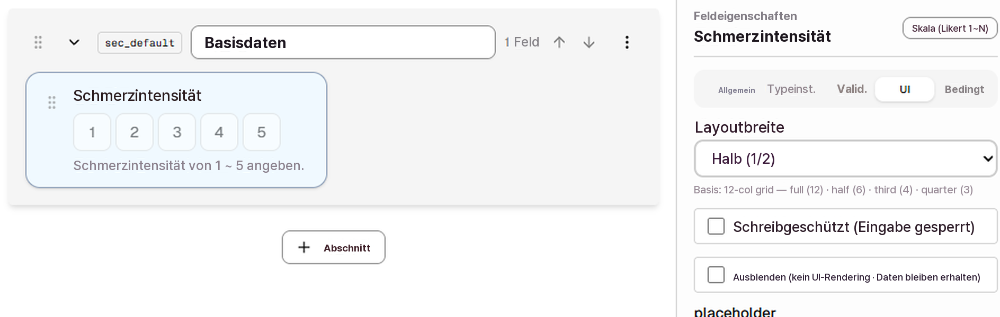
Layoutbreite — Legen Sie die Breite in der Auswahlliste fest. Im Beispiel Halb (1/2).
Das Feld auf dem Canvas wird auf halbe Breite verkleinert. 5 Schaltflächen passen noch in eine Zeile.
Zu beachten
Unbedingt prüfen Datenschäden · Formular nicht abschließbar
- • ⛔ Verringern Sie die Breite bei Skalen mit vielen Stufen nicht. Schaltflächen und Labels an beiden Enden passen nicht in eine Zeile, sodass sie umbrechen oder Text abgeschnitten wird. Verwenden Sie ab 7 Stufen Voll.
Leicht missverständliches Verhalten
- • Wenn Sie die Breite verringern, wird das nächste Feld in derselben Zeile angeordnet. Übersteigt die Summe einer Zeile 12, wird in die nächste Zeile umgebrochen.
- • Prüfen Sie nach der Änderung auf dem Canvas, ob die Schaltflächen in eine Zeile passen. Die Vorschau zeigt die tatsächliche Anordnung.
Hinweis
- • Auf Geräten mit schmalem Bildschirm können die Felder unabhängig von der Einstellung einzeln untereinander angeordnet werden.
Breitenoptionen
| Option | Belegte Spalten | Anzahl pro Zeile | Bei Skalen |
|---|---|---|---|
| Voll | 12 | 1 | Auch bei vielen Stufen sicher — empfohlen |
| Halb (1/2) | 6 | 2 | Bis etwa 5 Stufen |
| Drittel (1/3) | 4 | 3 | Schaltflächen können umbrechen |
| Viertel (1/4) | 3 | 4 | Auch die Labels an beiden Enden überlappen, schwer lesbar |
4.3Schreibgeschützt · Ausblenden
Überblick
Hiermit verhindern Sie, dass das Feld ausgewählt werden kann, oder dass es angezeigt wird. In beiden Fällen bleibt der gespeicherte Wert unverändert erhalten.
Bildschirmbeschreibung
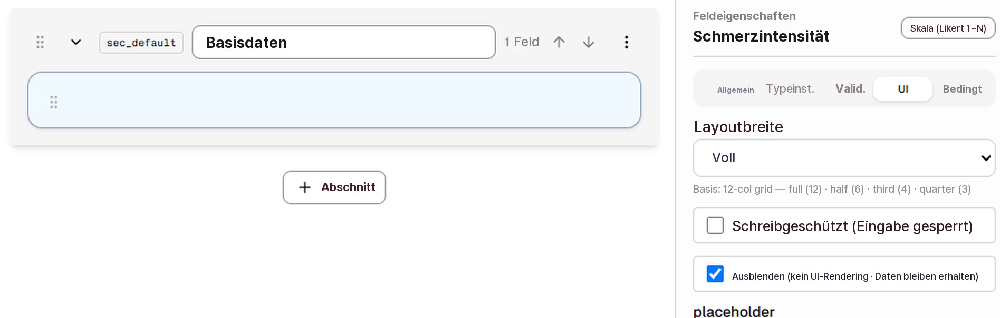
Schreibgeschützt (Eingabe gesperrt) — der ausgewählte Wert ist sichtbar, kann vom Benutzer aber nicht geändert werden. (In dieser Aufnahme deaktiviert)
Ausblenden (kein UI-Rendering · Daten bleiben erhalten) — wird in der Eingabemaske nicht angezeigt. Bereits gespeicherte Werte werden nicht gelöscht.
Das Feld verschwindet vom Canvas, und der Abschnitt wirkt leer.
Zu beachten
Unbedingt prüfen Datenschäden · Formular nicht abschließbar
- • ⛔ Blenden Sie keine Pflichtfelder aus. Das Ausblenden im Tab „UI“ verbirgt das Feld nur auf dem Bildschirm und nimmt es nicht aus der Pflichtfeldzählung aus — ein Element, bei dem Benutzer nichts auswählen können, bleibt im Nenner, und das Formular kann nicht abgeschlossen werden.
- • Ausblenden löscht keine Daten. Das Feld verschwindet nur vom Bildschirm; um den Wert zu löschen, müssen Sie das Feld löschen.
Leicht missverständliches Verhalten
- • Es unterscheidet sich vom Ausblenden im Tab „Bedingt“. Felder, die ausgeblendet sind, weil die Bedingung nicht zutrifft, werden aus der Pflichtfeldzählung ausgenommen Kap. 5. Obwohl beide als „Ausblenden“ bezeichnet werden, ist die Behandlung bei der Validierung genau entgegengesetzt; unterscheiden Sie daher beides.
- • Schreibgeschützt und Ausblenden sind verschieden. Schreibgeschützt bedeutet „angezeigt, aber nicht änderbar“, Ausblenden „nicht angezeigt“. Wenn eine bereits beantwortete Stufe sichtbar bleiben soll, verwenden Sie Schreibgeschützt.
Hinweis
- • Auch ausgeblendet bleibt das Feld im Strukturbereich erhalten — Sie können es erneut auswählen und die Einstellung zurücksetzen.
4.4helpText (Hilfetext)
Überblick
Ein Hinweistext unter dem Feld. Bei Skalen, bei denen nur Zahlenschaltflächen sichtbar sind, entscheidet dieser Text über die Einheitlichkeit der Erfassung. Er verschwindet auch bei Beginn der Eingabe nicht und eignet sich daher, um Bewertungskriterien festzuhalten.
Bildschirmbeschreibung
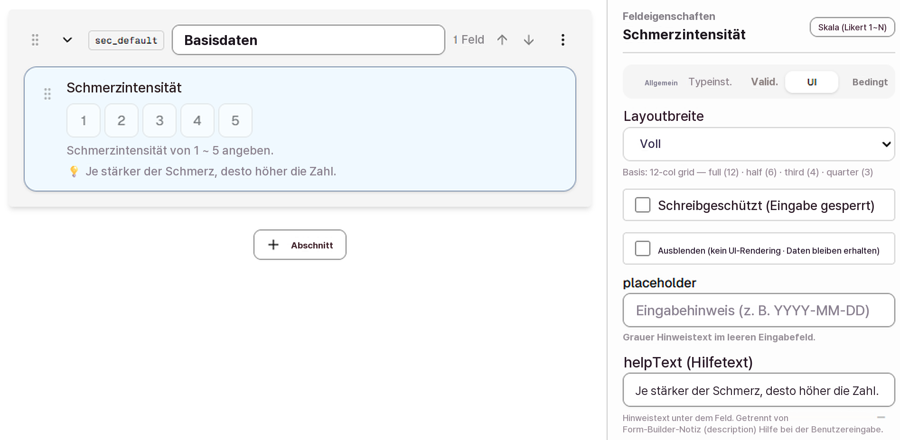
helpText (Hilfetext) — Geben Sie den Hinweistext ein, der unter dem Feld angezeigt wird. Die Aufnahme zeigt Je stärker der Schmerz, desto höher die Zahl. und gibt damit die Richtung der Skala an.
Erscheint unter dem Feld zusammen mit einem Glühbirnensymbol (💡). Auch wenn Benutzer einen Wert auswählen, verschwindet er nicht.
placeholder ist leer — dieses Element wird bei Skalen nicht angewendet. 4.1
Zu beachten
Unbedingt prüfen Datenschäden · Formular nicht abschließbar
- • Geben Sie unbedingt die Richtung an. Schon ein einziger Satz wie „je stärker, desto höher die Zahl“ verhindert, dass Erfasser die Skala umgekehrt verstehen. Das ist der häufigste Fehler bei Skalen.
- • Die Bedeutung der mittleren Stufen schreiben Sie hier. Es gibt nur zwei Labels an beiden Enden 3.2; wenn Definitionen für Stufe 3 · Stufe 4 nötig sind, schreiben Sie diese ebenfalls in helpText.
Leicht missverständliches Verhalten
- • description und helpText sind unterschiedliche Elemente. Wie der Bildschirmhinweis sagt — helpText: „Getrennt von Form-Builder-Notiz (description) — Hilfe bei der Benutzereingabe“. Wenn Sie beide eingeben, werden zwei Zeilen zusammen angezeigt.
Rolle der 4 Hinweistexte
| Element | Anzeigeposition | Bei Skalen | Einstellort |
|---|---|---|---|
| helpText | unter dem Feld (💡) | Bewertungskriterien · Richtung angeben | Tab „UI“ |
| description | unter dem Anzeigenamen | Angeben, wonach das Element fragt | Tab „Allgemein“ 2.1 |
| minLabel · maxLabel | An beiden Enden der Schaltflächenzeile | Nur kurz die Bedeutung der Endstufen | Tab „Typeinstellungen“ 3.2 |
| placeholder | — | Nicht angewendet | Tab „UI“ |
Tab „Bedingt“ — Anzeige abhängig von anderen Werten
- 5.1Bedingte Anzeige aktivieren
- 5.2Bedingung festlegen
5.1Bedingte Anzeige aktivieren
Überblick
Mit dieser Funktion wird das Feld abhängig vom Wert eines anderen Felds angezeigt oder ausgeblendet. Sie wird für Verzweigungen verwendet, z. B. um die Schmerzintensität nur abzufragen, wenn „Schmerzen vorhanden = Ja“ — die Funktion, die am besten zu Skalen passt: Nicht betroffenen Probanden werden keine Schaltflächen angezeigt, aus denen sie nichts auswählen können.
Bildschirmbeschreibung
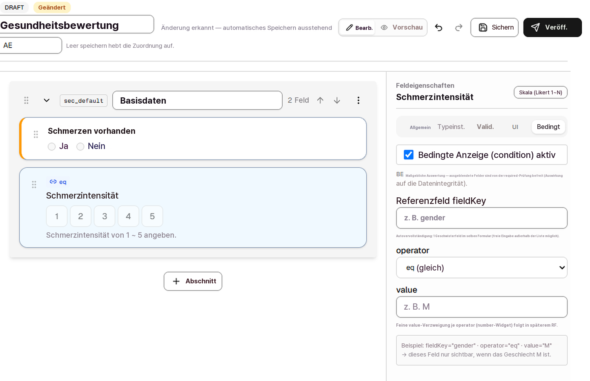
Bedingte Anzeige (condition) aktiv — Wenn aktiviert, werden die folgenden Bedingungseinstellungen angezeigt.
Über dem Feld auf dem Canvas erscheint das Badge 🔗 eq und zeigt an, dass eine Bedingung angewendet wird.
⚠ Bildschirmhinweis — „ausgeblendete Felder sind von der required-Prüfung befreit (Auswirkung auf die Datenintegrität).“ Die Bedingung wird vom System ausgewertet.
Referenzfeld fieldKey — ein anderes Feld im selben Formular, das als Grundlage der Bedingung dient. Geschwisterfelder desselben Formulars werden automatisch vervollständigt; Werte, die nicht in der Liste stehen, können Sie auch direkt eingeben.
operator — die Vergleichsart. Standard ist eq (gleich).
value — der Vergleichswert.
Beispiel unten — fieldKey="gender" · operator="eq" · value="M" → dieses Feld nur sichtbar, wenn das Geschlecht M ist.
Zu beachten
Unbedingt prüfen Datenschäden · Formular nicht abschließbar
- • Wenn Sie eine Bedingung festlegen, kann die Pflichtprüfung entfallen. Solange das Feld ausgeblendet ist, weil die Bedingung nicht zutrifft, wird das Formular abgeschlossen, auch wenn dieses Feld ein Pflichtfeld und leer ist. Dies ist kein Fehler, sondern beabsichtigtes Verhalten.
- • Wird die Bedingung falsch, während bereits ein Wert ausgewählt ist, verschwindet dieser Wert vom Bildschirm. Seien Sie vorsichtig, wenn Sie das Feld, das als Verzweigungskriterium dient, nachträglich ändern.
Leicht missverständliches Verhalten
- • Dies ist der sauberste Weg, das Problem „Nicht zutreffend“ zu lösen. Wenn nur Probanden mit Symptomen nach der Intensität gefragt werden, müssen Sie keine Option „Keine“ in die Skala zwängen, und auch die Festlegung als Pflichtfeld wird sicher. 2.2
Hinweis
- • Wenn Sie die Bedingung aktivieren und das Referenzfeld leer lassen, ist die Bedingung nicht erfüllt. Geben Sie unbedingt ②~④ vollständig ein. 5.2
5.2Bedingung festlegen
Überblick
Die in 5.1 aktivierte Bedingung ist vollständig eingegeben. Mit dieser Einstellung wird dieses Skalenfeld nur dann in der Eingabemaske angezeigt, wenn das Feld „Schmerzen vorhanden“ den Wert 1 (Ja) hat.
Bildschirmbeschreibung
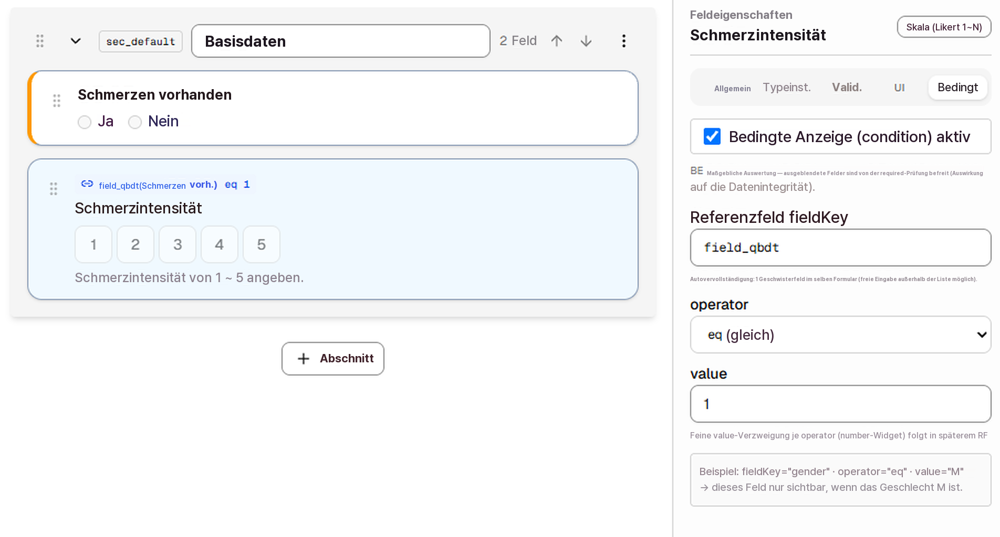
Schmerzen vorhanden den Wert 1 hatReferenzfeld fieldKey = field_qbdt — verweist auf das Feld „Schmerzen vorhanden“ im selben Formular.
operator = eq (gleich)
value = 1 — Geben Sie nicht das auf dem Bildschirm angezeigte „Ja“ ein, sondern den gespeicherten Wert dieser Option.
Ergebnis nach Eingabe von ①~③ — das Badge auf dem Canvas wird konkret zu 🔗 field_qbdt(Schmerzen vorhanden) eq 1. So sehen Sie sofort, welche Bedingung gilt.
Beispiel unten — fieldKey="gender" · operator="eq" · value="M" → dieses Feld nur sichtbar, wenn das Geschlecht M ist.
Zu beachten
Unbedingt prüfen Datenschäden · Formular nicht abschließbar
- • ⛔ Geben Sie bei value nicht den Bildschirmtext, sondern den gespeicherten Wert ein. In der Aufnahme wird das Referenzfeld als Ja / Nein angezeigt, der tatsächlich gespeicherte Wert ist aber
1. Wenn Sie „Ja“ eingeben, ist die Bedingung nie erfüllt, und dieses Feld wird niemals angezeigt. Prüfen Sie zuerst die gespeicherten Werte der Optionen des referenzierten Felds. - • Wenn Sie den fieldKey des Referenzfelds ändern oder das Feld löschen, wird die Bedingung ungültig. Die Bedingung ist nicht über den Anzeigenamen, sondern über den fieldKey verknüpft. (Aus demselben Grund wie beim fieldKey-Hinweis in 2.1.)
Leicht missverständliches Verhalten
- • Sie können auch auf ein Skalenfeld verweisen. Geben Sie dann bei value die ausgewählte Zahl unverändert ein (z. B. eine Zusatzfrage nur anzeigen, wenn die Schmerzintensität 4 oder höher ist — eq ist jedoch nur bei exakter Gleichheit erfüllt; wenn Sie „größer gleich · kleiner gleich“ benötigen, prüfen Sie operator).
Hinweis
- • Bedingungen verkürzen das Formular und reduzieren unnötige Eingaben. Widersprechen sich Bedingungen jedoch, entstehen Felder, die nie angezeigt werden; prüfen Sie daher nach der Einstellung unbedingt in der Vorschau.
Anhang
- 6.1Einstellungen auf einen Blick
6.1Einstellungen des Skalenfelds auf einen Blick
Einstellungen je Tab
| Tab | Element | Was wird festgelegt | Abschnitt |
|---|---|---|---|
| Allgemein | fieldKey | Tatsächlicher Speicherschlüssel des Werts (nach dem Speichern nicht ändern) | 2.1 |
| label (Anzeigename) | Auf dem Bildschirm angezeigter Elementname | 2.1 | |
| description (Hilfetext) | Ergänzende Beschreibung unter dem Anzeigenamen | 2.1 | |
| Pflichtfeld | Ob eine Auswahl zwingend ist (zuerst Lösung für „Nicht zutreffend“ festlegen) | 2.2 | |
| SDV-Verifizierung | Ob Gegenstand des CRA-Quelldatenabgleichs · ob Verifizierung erforderlich | 2.3 | |
| AE-Bedeutungsrolle | Was dieses Feld im AE-Formular bedeutet | ※ | |
| „Nicht gemessen“ zulassen | Ob „Nicht beurteilbar“ als Wert erfasst werden kann · Anzeigelabel · Indikator | 2.4 | |
| Typeinstellungen | min · max · step | Anfang · Ende · Abstand der Optionen (Schaltflächen werden automatisch erstellt) | 3.2 |
| minLabel · maxLabel | Beschreibungstexte nur an den Schaltflächen an beiden Enden | 3.2 | |
| Standardwert (defaultValue) | Vorausgewählte Zahl (bei Skalen nicht empfohlen) | 3.3 | |
| Automatische Berechnung | Bei diesem Typ nicht verwendet | 3.1 | |
| UI | Layoutbreite | Breite im 12-col grid — bei vielen Stufen Voll | 4.2 |
| Schreibgeschützt | Anzeigen, aber nicht änderbar | 4.3 | |
| Ausblenden | Nicht angezeigt (gespeicherter Wert bleibt · bleibt in der Pflichtfeldzählung) | 4.3 | |
| helpText (Hilfetext) | Bewertungskriterien · Richtung — bei Skalen am wichtigsten | 4.4 | |
| Bedingt | Bedingung aktiv | Ob bedingte Anzeige verwendet wird (von der Pflichtprüfung befreit) | 5.1 |
| Referenzfeld fieldKey | Feld im selben Formular als Grundlage der Bedingung | 5.2 | |
| operator · value | Vergleichsart und Vergleichswert (gespeicherten Wert eingeben) | 5.2 |
Unbedingt merken
Unbedingt prüfen Datenschäden · Formular nicht abschließbar
- • Ändern Sie den Skalenbereich nach der Veröffentlichung nicht. Die
3von 1~5 und die3von 1~7 bedeuten Unterschiedliches — frühere und spätere Daten lassen sich nicht als eine Skala auswerten. 3.2 - • Erfassen Sie „keine Symptome“ nicht als „Nicht gemessen“. Es ist ein Bewertungsergebnis und nicht „nicht beurteilbar“. Um es zu erfassen, setzen Sie min auf 0. 2.4 · 3.2
- • Legen Sie kein Pflichtfeld fest, ohne eine Lösung für „Nicht zutreffend“ vorzusehen. Legen Sie zuerst eines von min 0 · bedingter Anzeige · Erklärung „Nicht gemessen“ fest. 2.2
- • Legen Sie bei Skalen keinen Standardwert fest. Da es sich um eine subjektive Bewertung handelt, werden die Antworten zu diesem Wert hingezogen. 3.3
- • Geben Sie in helpText die Richtung an. Ein einziger Satz „je stärker, desto höher die Zahl“ verhindert, dass die Skala umgekehrt verstanden wird. 4.4
Leicht missverständliches Verhalten
- • Gespeichert werden nur Zahlen. Die Labels an beiden Enden sind Bildschirmtexte und gelangen nicht in die Daten. 1.1
- • Auch wenn Sie einen Standardwert festlegen, erscheint auf dem Canvas keine Auswahlmarkierung. Das bedeutet nicht, dass die Einstellung fehlgeschlagen ist. 3.3
Hinweis
- • Ist step größer als der Bereich, entsteht nur eine Schaltfläche, ohne dass das System dies verhindert. Prüfen Sie die Anzahl auf dem Canvas. 3.2
Nicht in diesem Dokument behandelt
※ AE-Bedeutungsrolle — befindet sich im Tab „Allgemein“, hat aber keinen eigenen Abschnitt, da keine Aufnahmen des Einstellvorgangs vorliegen. Sie wird nur in Projekten festgelegt, die Formulare für unerwünschte Ereignisse (AE) verwenden; Einzelheiten finden Sie in der AE-Dokumentation.
Tab „Validierung“ — ist unter den Eigenschafts-Tabs vorhanden, wird bei Skalen aber nicht verwendet. Die Validierung prüft, ob ein vom Benutzer eingegebener Wert eine Bedingung erfüllt; bei Skalen kann jedoch nur aus den erstellten Schaltflächen ausgewählt werden, sodass Werte außerhalb des Bereichs gar nicht erst entstehen. Um die Optionen selbst zu ändern, passen Sie min · max · step im Tab „Typeinstellungen“ an. 3.2
Automatische Berechnung (calculation) — das Element wird im Tab „Typeinstellungen“ angezeigt, bei diesem Typ aber nicht verwendet. Es berechnet Zahlenwerte aus anderen Feldwerten; verwenden Sie es daher beim Typ Zahl. 3.1
placeholder — das Element wird im Tab „UI“ angezeigt, aber nicht angewendet. Denn dieser Typ hat kein Feld zur Texteingabe. Hinweise geben Sie über helpText. 4.1 · 4.4